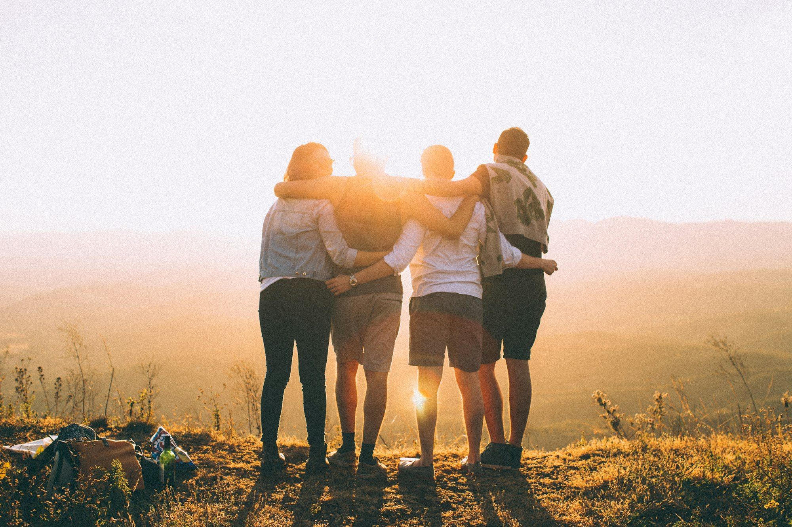
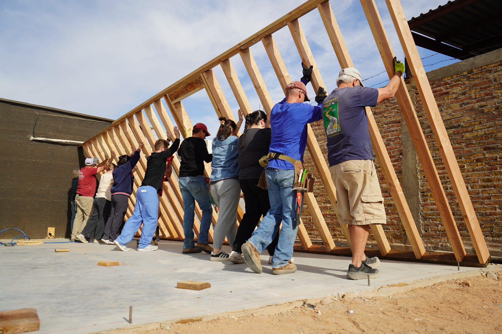
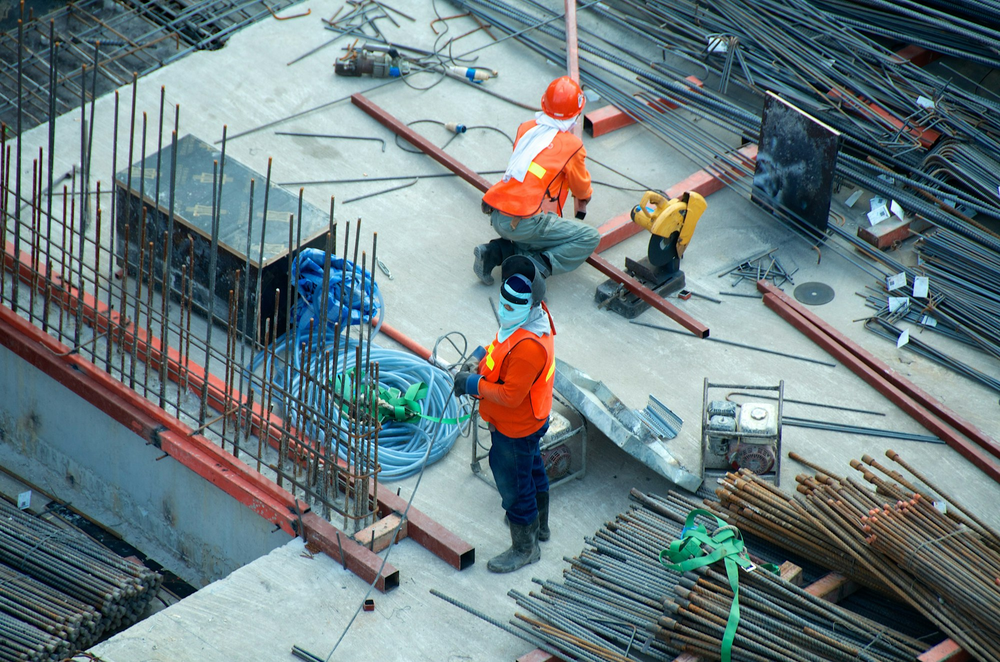

Acompanhe a obra
Veja o progresso da construção da nossa nova sede, etapa por etapa.
Galeria de progresso
Acompanhe visualmente a evolução da obra.

Fase inicial
Estruturas
Visão geralVeja o progresso da construção da nossa nova sede, etapa por etapa.
Acompanhe visualmente a evolução da obra.

Fase inicial
Estruturas
Visão geral